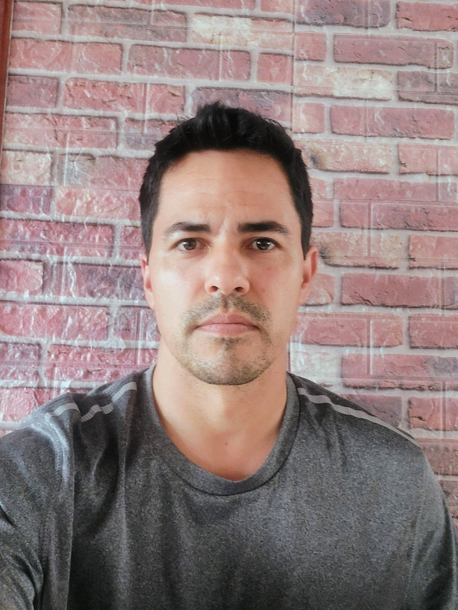

Evandro Cardoso da Silva

Trajetória
Olá, sou natural do Rio Grande do Sul, Já trabalhei como frentista, empacotador, estoquista,
repositor de loja, especialista em cortes de carne no Mercado Angeloni em Blumenau,
trabalhei como Vendedor nas lojas Renner, onde ao mesmo tempo Efetuei o Curso
de Comissário de Bordo, me formei, Fui aprovado na prova da Anac. Tirei minha carteira
de Comissário, estava prestes a ingressar em uma companhia aérea quando minha mãe
necessitou de ajuda deviao a saúde frágil. Então tive que abandonar este
sonho e uma carreira na Aviação. Ao mesmo tempo encontrei uma nova profissão,
que estou até hoje. Técnico em Telecomunicação, foi dificil entrar nesta área
pois havia muito preconceito dos proprietários de empresas em contratar um Vendedor
de shopping para área de instalação.
Então tive que me dedicar e mostrar que éra
capaz de superar as probabilidades de desistencia. Tive minha aceitação no ramo
da telecomunicação pela empresa NET no ano de 2011. Onde fiz de tudo um pouco;
Instalação de internet e TV via cabo Coaquial, Instalação de Tv via Satélite,
Adequação de prédios com Cabeamento Estruturado, e todo suporte técnico aos
clientes e empresas. Trabalhei como suporte Técnico de TI e permaneço na área
até os dias atuais. Neste meio tempo Estou me formando como professor de história
na faculdade Estacio de sá. Falta somente os Estágios supervisionados pra concluir,
Pois já defendi minha Tese tirando nota 9,5.
Hoje trabalho autônomo para um amigo que tem a concessão
junto a Vero internet, antiga NEOREDE. Estou buscando mudar de área
e Ingressar no ramo da programação onde tem infinitas possibilidades.
Nesse tempo de 12 anos Me casei, constitiu uma linda familia, com um casal de filhos
como estava programado em nossos planos.
xxxxxxxxxxxxxxxxxxxxxxxxxxxxxxxxxxxxxxxxxxxx
Minhas experiências profissionais
Empresas:
ItConnect --- Técnico de Suporte e Telecomunicações.
Serede SA. --- Técnico Instalador.
Icatel Telemática --- Técnico Instalador.
J5 Telecom (Net Tv)--- Técnico Instalador.
FN Atividades de Cobrança LTDA --- Auxiliar de Escritório em Geral
MG Informações Cadastrais LTDA --- Gerente de Captação (Fundos e Investimentos)
Cooperativa Central Gaucha LTDA. --- Inspetor de Qualidade
A. Angeloni & Cia. LTDA --- Vendedor em Comercio Atacadista
Lojas Quero Quero SA. --- Almoxarife.
Meus conhecimentos e Qualificações
- Superior em História (Cursando)
- Gestão de Infraestrutura de TI - FIAP
- Programação em Lua e HTML.CSS (CPDI)
- Espanhol Básico - Professor Particular
- Inglês Básico - Professor Particular
- Curso Técnico em Emendas e Conectorização para Fibra Ópticas - SINTEL/SC
- Mikrotik do Zero - Redes Brasil
- Curso de Liderança: Como desenvolver esta competência
Repertório de projetos
LUA
Projeto feito em aula
HTML.CSS
Projetos feito em aula
Projeto final do curso (CPDI)
Projeto final do curso foi desenvolvido por uma equipe de 4 componentes. Onde cada um fez seu parte e também compartilhamos de conhecimentos em grupo para um melhor aprendizado.
xxxxxxxxxxxxxxxxx